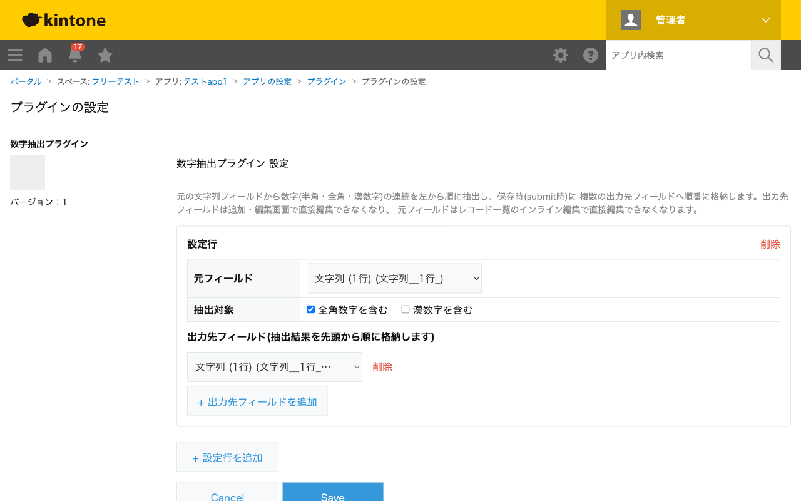

GovAppsプラグイン 安全性を確認できる無料kintoneプラグイン集
元の文字列フィールドから、数字(半角・全角・漢数字)の連続した並びを左から順にすべて取り出し、
複数の出力先フィールドへ先頭から順に格納します。「二丁目3番4号」のような住所文字列から丁目・番地・号を
分けて取り出すような用途に使えます(区切り文字で1回だけ分割するtext_splitとは異なり、
数字の連続部分だけを拾い集めます)。
「二丁目3番4号」のような住所の一部を1つの文字列フィールドに入力しておくだけで、含まれる数字の連続部分(この例では「二」→2、「3」→3、「4」→4)を順番に別々のフィールドへ自動入力できます。漢数字を含めるかどうかはオプションで切り替えられます。
「二〇二四年」のような読み上げ表記の漢数字も1文字ずつ桁として連結して変換するため(例: 「二〇二四」→2024)、位取り表記(十・百・千・万を含む)とは別パターンとして抽出できます。
元フィールドの値が変わるたびに抽出処理が実行されます(保存時ではありません)。抽出結果が出力先フィールドの数より少ない場合は余ったフィールドを空にし、多い場合ははみ出した分を切り捨てます。出力先フィールドはdisabledにならないため、抽出後にユーザーが手で修正できます。元フィールドはレコード一覧のインライン編集でのみ編集を禁止します。数値(NUMBER)型の出力先フィールドに格納した場合、先頭ゼロはkintoneの仕様により保持されません。
kintoneセキュアコーディングガイドラインに沿って実装時にチェックしています。特に重要な点は次のとおりです。
/\d+/g等)のみを使用しており、設定画面からの入力を正規表現として動的に組み立てることはしません。ReDoSや正規表現インジェクションのリスクは実質的にありません。textContentまたは<template>要素のcloneNodeで行っており、innerHTMLへの外部由来文字列の埋め込みはありません。出力先フィールドへの書き込みもevent.record[...].valueへの文字列代入のみです。詳細な確認項目・確認日は下記GitHubのチェックリストに全項目を掲載しています。

このプラグインはREST APIを一切実行しません。フィールド一覧の取得は
kintone.app.getFormFields()、抽出結果の反映はchangeイベントの
JavaScript APIのみで完結し、API実行数制限に影響することはありません。